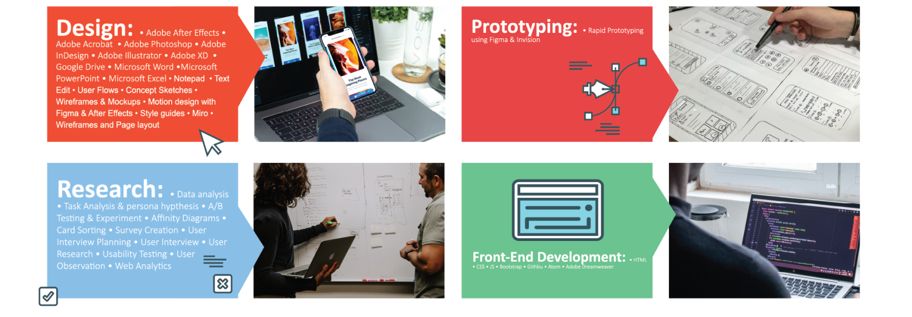

I am Xavier Camacho, UX/UI and Graphic designer. I love to make bold designs that would make someone's day and have an impact.
My skills include but are not limited to: Adobe Suite, Figma and UX research. I've been a Graphic designer for a sign studio for
2 years before deciding to explore the big world of UX Design.
Skills

User Research
For research I'm always looking to find the most important thing for the user, so I can provide the best information needed to our team. The tools I use for research is Miro and Invision.
User Empathy
When I collect my information its important to understand my user. Their constraints and the context of their situation as whole. I also use miro for empathy work.
Qualitive Interviews
When I interview my users, I tend to begin very broad and slowly get more focused on the target topic. Then to understand their motivations, thoughts and attitudes of our target users.